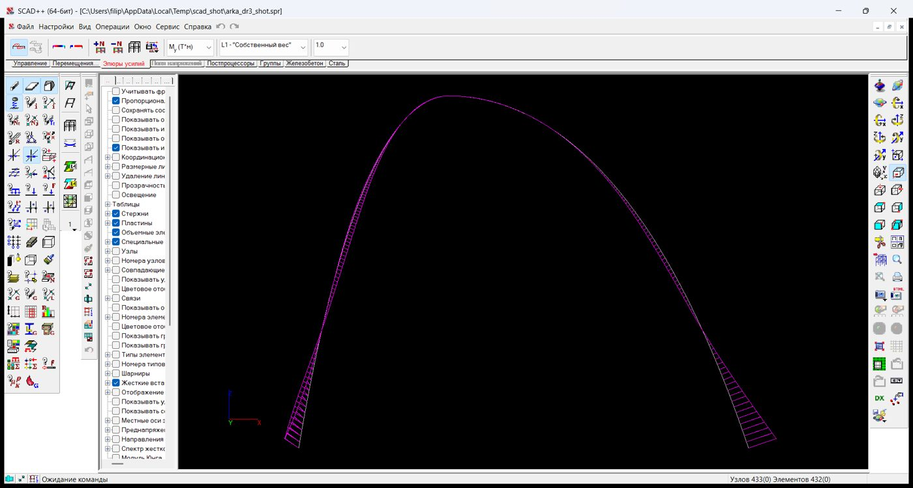
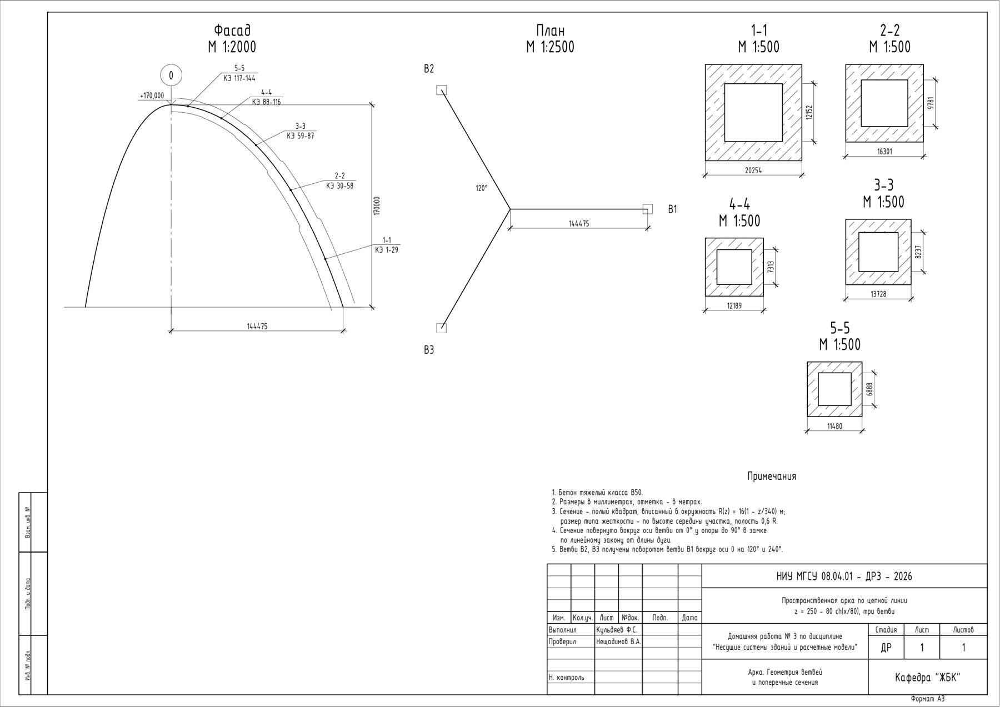

Глава 1 · Обстоятельства дела
Что построено
Исходные данные варианта: a = 250 м, b = 80 м, N = 3, M = 4, K = 5, R = 16 м. Ось каждой ветви — перевёрнутая цепная линия z = 250 − 80·ch(x/80), высота замка 170 м, опоры в 144,47 м от оси. Три ветви сходятся в замке, в плане — через 120°.
Сечение — полый квадрат, вписанный в окружность R(z) = 16·(1 − z/340) м: сторона уменьшается от 20,25 м у опоры до 11,48 м у замка (5 типов жёсткости). Каждое сечение повёрнуто вокруг оси ветви — от 0° у опоры до 90° в замке (квадрат совпадает сам с собой через 90°). Бетон В50. Нагрузки — собственный вес и снег по СП 20 (сводчатые покрытия, μ₁ и μ₂).
Ни одного щелчка мышью по 432 элементам: координаты, жёсткости, углы поворота и нагрузки сформированы по формулам и записаны в текстовый файл SCAD — фрагмент справа. Сечения — AutoCAD → «Консул».
Глава 2 · Улика
Изгибающий момент у опоры: т·м
Учебник обещает: перевёрнутая цепная линия — форма, в которой арка под собственным весом только сжата. Так Гауди искал форму своих сводов по провисшим цепочкам. У нас ось — точная цепная линия.
Но расчёт в SCAD показывает у опоры момент больше полумиллиона тонно-метров — при продольной силе около 100 тыс. т. Эксцентриситет силы — около 5 м, четверть стороны сечения. Это не ошибка округления.
Кто «изогнул» арку, которая не должна гнуться?

Глава 3 · Версия первая
Виновата форма оси?
Проверка: та же цепная линия, но сечение одинаковое по всей длине (сторона м). Если форма ошибочна, момент останется.
Момент упал в раз: с до т·м. Форма почти невиновна — цепная линия действительно близка к безмоментной, когда вес распределён равномерно.
Глава 4 · Версия вторая
Виноват неравномерный вес
Цепная линия — линия давления только для нагрузки, равномерной по длине дуги. У нашей арки погонный вес убывает от опоры к замку втрое: 656 → 211 т/м. Тяжёлый «низ» требует другой кривой.
Значит, нужно найти ось, совпадающую с линией давления от реального веса. Делаем это итерациями: берём ось, считаем вес каждого элемента и распор H, строим веревочный многоугольник, получаем новую ось — и так, пока форма не перестанет меняться.
Глава 5 · Следственный эксперимент
Ищем линию давления
итерация 0
Форма сошлась за итераций; распор т на ветвь. Новая ось отходит от цепной линии наружу до 17 м (при x ≈ 118 м): тяжёлому низу нужна более «пузатая» арка.
Ни одна цепная линия той же высоты не ложится на найденную кривую точнее, чем с отклонением 11 м. Ответ на вопрос, который интересовал всех: искомая кривая — уже не гиперболический косинус.
На найденной оси наибольший момент — т·м вместо , наибольшее сжатие бетона МПа вместо , растяжения нет вовсе. Но момент не нулевой. Остался последний подозреваемый.
Глава 6 · Последний подозреваемый
Укорочение оси
Арка сжата силой около 100 тыс. т и укорачивается. Опоры защемлены и не дают ей «осесть» свободно — ось искривляется, появляется момент. Безмоментное решение верно лишь для нерастяжимой арки.
Проверка: повторяем расчёт на найденной оси с продольной жёсткостью EF, увеличенной в 1000 раз (арка становится почти нерастяжимой).
Момент падает до т·м — в 170 раз. Виновник найден: оставшийся изгиб — следствие продольной деформативности. Остаток в сотни т·м — от замены непрерывного веса узловыми силами (144 прямых элемента).
Глава 7 · Лаборатория
А если сделать полость больше?
Тринадцать расчётов в SCAD: полость от 0,30 до 0,90 радиуса сечения, ось — исходная цепная линия, сочетание 1,1·собственный вес + 1,4·снег. Двигайте ползунок.
- Вес арки
- Сжатие, наибольшее
- Растяжение в углах сечения
- Перемещение замка
Вес падает почти в 5 раз, а сжатие почти не меняется: у арки, несущей в основном себя, продольная сила растёт вместе с площадью, и N/A остаётся прежним. Решает растяжение в углах повёрнутого сечения: чем меньше полость, тем больше вес, изгиб и растяжение. При полости 0,55R и меньше растяжение превышает Rbt = 1,60 МПа — по растяжению бетона полость должна быть не меньше ≈0,57R. Принятые 0,6R дают 1,47 МПа — запас 8 %.
Протокол
Заключение
- Цепная линия безмоментна только при равномерном по длине весе. При сечении, убывающем к замку, у опоры возникает момент около 0,5 млн т·м.
- Ось, совпадающая с линией давления от реального веса, найдена итерациями; она отклоняется от цепной линии до 17 м и не описывается гиперболическим косинусом. Сжатие бетона на ней — 4,9 МПа вместо 8,9.
- Оставшийся изгиб вызван укорочением оси при защемлённых опорах: у почти нерастяжимой арки он падает в 170 раз.
- Сечение повёрнуто вдоль ветви на 90°: жёсткость квадрата от этого не меняется, но в средней части ветви момент раскладывается на обе стороны, и растяжение в углу растёт в 3,5 раза — до 1,47 МПа при Rbt = 1,60 МПа.
- Сжатие от размера полости почти не зависит (N/A постоянно), а растяжение в углах — зависит: по нему полость должна быть не меньше ≈0,57R.

Материалы
- Отчёт по домашней работе (PDF)
- Лист чертежа (PDF)
- Расчётная схема в текстовом формате SCAD (кодировка Windows-1251; «Файл → Прочитать проект из текстового формата», сечения — из архива ниже в папку sechenia рядом)
- Сечения «Консула» и DXF
- Результаты экспериментов (JSON)
Расчёт — SCAD Office 21.1.9.9, линейная постановка; сечения — «Консул»; чертёж — AutoCAD. Снег — СП 20.13330.2016, прил. Б.2; бетон — СП 63.13330.2018.